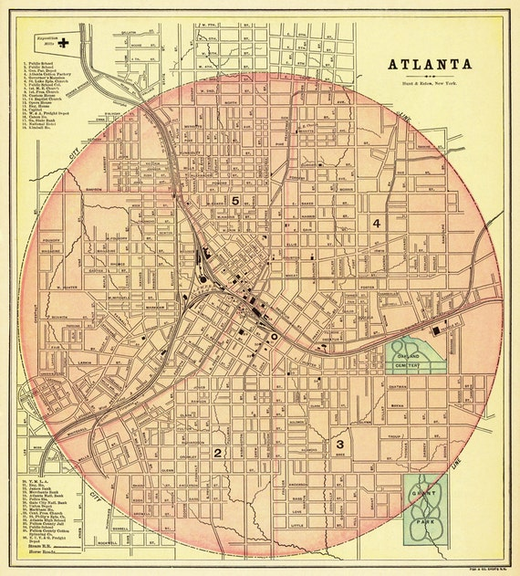
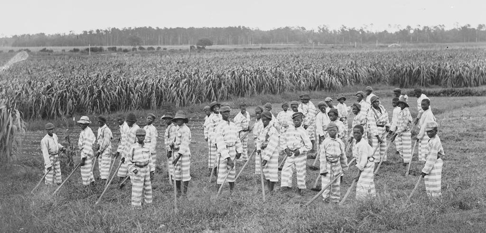

In Atlanta, white-owned newspapers upheld white supremacist ideals.
By Shreya Vuttaluru, for The Howard Center for Investigative Journalism.

An old map of Atlanta. (Source: Etsy.com).
In 1906, two of Atlanta’s most prominent newspapermen committed an act that many of today’s journalists would consider a sin: Hoke Smith, the publisher of The Atlanta Journal, and Clark Howell, the managing editor of The Atlanta Constitution, campaigned against each other for the governor’s seat in the Democratic primary.
Smith and Howell were among Atlanta’s elite class and champions of white supremacy. The Journal and The Constitution clashed in their coverage of the election, with the former serving as Smith’s mouthpiece and the latter campaigning for Howell.
“[Howell] appears to be unable to understand why it is that we wish the legal disenfranchisement of the 223,000 male negroes of voting age in Georgia. … Because we are the superior race and do not intend to be ruled by our semi barbaric inferiors,” one Journal article read.
The Constitution retaliated by accusing Smith of appointing Black people to federal positions during his tenure in then-President Grover Cleveland’s cabinet. Smith denied the accusation.
Ultimately, Smith won the election in a landslide. One of his first actions as governor was to sign legislation that effectively disenfranchised Black voters through literacy tests.
That editorial embrace of white supremacy, which helped lay the foundation for Atlanta’s deadly 1906 race massacre, was personified by newspaper tycoon Henry Grady, the managing editor of The Constitution who became the voice of the New South in the 1880s.
Two decades before Smith and Howell duked it out, Grady helped birth the sensationalism that plagued Atlanta’s newspapers. He was a nationally prominent proponent of the idea of a new post-Civil War and post-Reconstruction society in the states of the defeated Confederacy, which he called the New South.
Grady was part owner, managing editor and director of news coverage for The Constitution. He wrote several editorials for the paper, gave political speeches throughout his tenure and, notably, considered one particular part of the Old South essential to the New.
“Those who would put the negro race in supremacy would work against infallible decree, for the white race can never submit to its domination, because the white race is the superior race,” Grady said in an 1887 speech at the Texas State Fair & Dallas Exposition.
“But the supremacy of the white race of the South must be maintained forever,” he continued, “and the domination of the negro race resisted at all points and at all hazards, because the white race is the superior race. This is the declaration of no new truth. It has abided forever in the marrow of our bones, and shall run forever with the blood that feeds Anglo-Saxon hearts.”

A sketch of Henry Grady. (Source: Shuttershock).
“It’s not just that he defends it in the newspaper, which he does over and over again, and belittles the lives of...Black southerners who are caught up in the system,” Kathy Roberts Forde said. “It’s that he himself is acting with political interest to protect the lease.”
It was a time when editors had to “have a purpose,” and Grady’s was “to build the New South among Georgia’s red hills,” Louis Griffith and John Talmadge wrote in “Georgia Journalism,” a historical account of news work in the state published by the University of Georgia Press.
“In an era of machine politics and a press aligned with political parties, Grady proved a master at both,” Kathy Roberts Forde, a journalism professor at the University of Massachusetts Amherst, wrote in a 2019 article for The Conversation.
In early editorials for The Atlanta Constitution, Grady praised Georgia politicians and other southern leaders for being the life of his New South movement, which advocated for industrial development, often at the expense of Black laborers trapped in the convict lease system. The system operated by leasing prisoners to private companies for unpaid or extremely low-wage labor. At its core, Forde said, the New South movement was white supremacist and anti-Black.
The growth of the convict leasing system was encouraged during Grady’s tenure as managing editor, especially among Georgia’s politicians and businessmen. Using what came to be known as the Black Codes, men and boys in particular were arrested, charged, and convicted of offenses large and small. After being sentenced, they were rented out to private businesses in a system some likened to slavery.
The convict leasing pipeline was a ruthless cycle, according to Douglas A. Blackmon, author of “Slavery by Another Name: The Re-Enslavement of Black Americans from the Civil War to World War II.”
“This was a world in which it was clear that if you didn’t go along with the demands of wealthy, powerful white landowners … then you were putting yourself in jeopardy of being sucked into the convict leasing system and being returned to, essentially, a state of full enslavement,” said Blackmon, who teaches multimedia and investigative journalism at Georgia State University.
Defense of Georgia politicians’ stake in the system was common in The Constitution. In 1880, a bitter gubernatorial race between the incumbent governor of Georgia and a critic of the convict lease system provided the perfect opportunity for Grady to use his political influence.
Gov. Alfred Colquitt’s opponent was hammering him for his involvement in the convict lease system. The Constitution, records show, came to his rescue, dismissing his opponent’s campaign literature as “malicious slanders” and “an attempt to inflame the minds of the colored people.”
Some of Colquitt’s closest political allies were directly involved in the business of convict leasing, but they were not criticized. “The truth is, Atlanta is full of these self-made men,” Grady proclaimed in a Constitution editorial. “They enrich her blood, quicken her pulses and give her vitality, force and power.”
Colquitt won another term. Comfortably.
In other instances, The Constitution was less subtle in its defense of the convict lease. When an article in The New York Times criticized the conditions and death rates in the camps, The Constitution vehemently disagreed.
“It is true, they are not allowed to attend picnics, nor are they taught to perform the piano, but, with these exceptions, the Georgia convicts appear to be about as well off as the average laborers at the north, and we have no doubt that they fare better,” it wrote in December 1882.

Victims of the convict lease system often worked on fields or in factories for little to no pay. (Source: Equal Justice Initiative).
The same pattern of editorial coverage occurred in 1887, when the Georgia General Assembly investigated abusive whipping bosses and poor conditions in the convict camps.
“We take with several grains of salt all that is said about sympathy with the convicts,” the paper wrote. “We do not believe half the facts that are reported to the public.”
Most columns and articles in The Atlanta Constitution are not bylined, but Grady would have been acutely aware of everything going into the paper as managing editor, Forde said. She said much of Grady’s work reflected his personal views and political ambition.
“It’s not just that he defends it in the newspaper, which he does over and over again, and belittles the lives of … Black southerners who are caught up in the system,” Forde said. “It’s that he himself is acting with political interest to protect the lease.”
***
Where convict leasing was a judicial form of racial terror, lynching was its extrajudicial counterpart, said John Clegg, a history professor and researcher at the University of Chicago.
Lynching had been occurring in Georgia since the end of the Civil War. The New Georgia Encyclopedia said it peaked in 1899, when 27 Georgians were lynched. “Between 1890 and 1900 Georgia averaged more than one mob killing per month,” according to the encyclopedia.
The Constitution’s coverage was perfunctory at best and demeaning at worst, Forde found in research for the book she co-edited, “Journalism and Jim Crow: White Supremacy and the Black Struggle for a New America.”
“The content was just disturbingly light and humorous … and incredibly dismissive of Black life and the value of Black life,” Forde said in an interview. “The Triple Trapeze: Three Negroes Hung to a Limb of a Tree” was the headline on one story. Another headline was written to rhyme: “Two Minutes to Pray Before a Rope Dislocated Their Vertebrae.”
“The Atlanta Constitution begins to set in place norms and standards of lynching coverage,” Forde said. “As time goes on after Grady’s death in 1889, you have the next group of editors, many of whom came up under his tutelage. And by the time we get to the 1890s, you get the Sam Hose lynching … [which] is well understood to be one of the most brutal lynchings in the history of the American South.”
Sam Hose was chased by a mob for several days. The Atlanta Constitution offered a reward for Hose’s capture and published updates on the location and methods of his lynching. After being mutilated by the mob, Hose was ultimately doused in kerosene and set on fire on April 23, 1899.
The migration of Black people from rural areas to cities, and their increased presence and visibility ramped up fear among the white population, said Edward Ayers, a University of Richmond professor emeritus and historian. White newspapers, like those in Atlanta, capitalized on this alarm, Ayers said, sometimes publishing false accounts of rape that led to the arrests and lynchings of young Black men.
“The press is just drenched every day with what they call outrage,” Ayers said. “And the white South talks itself into seeing a threat in every Black face that they see.”
The Evening News in Atlanta was one of the newspapers doing the drenching. It falsely reported assaults of white women by Black men. “Men of Fulton [County, home of Atlanta], what will you do to stop these outrages against the women? … Shall these black devils be permitted to assault and almost kill our women, and go unpunished?” the newspaper read.
The call to action was answered with a September 1906 riot, when white mobs tore through Atlanta, killing dozens of Black citizens and wounding dozens more between Sept. 22 and 24. The mob left the corpses of three dead Black people at the foot of the Marietta Street monument to Grady.
The Henry Grady Monument in Atlanta, Georgia.
Source: 11alive News
Late in 2020, the former Henry W. Grady High School in Atlanta was renamed Midtown High School. There also have been calls to change the name of the Grady College of Journalism and Mass Communication at the University of Georgia in Athens and Grady Memorial Hospital in Atlanta.
“These things were not named for him because he gave millions of dollars of his own money to build these institutions. They were named in his honor by people I would think were rational people for their time,” Henry W. Grady III, the editor’s great-great-grandson and a member of the board of the journalism school, told The Atlanta Journal-Constitution in July.
“He wanted the South to be rebuilt and rise again. And it was lift the tide of all boats, not one over the other,” he said. “If you change it, change it for the better. But do it consciously, not reactively.”
William Hedgepeth, a writer, political consultant and former magazine editor, was against changing the name of the high school, from which he graduated in 1959, and was opposed to an apology.
“I just don’t think there’s any sense in people apologizing for things that happened 100 years ago, when viewpoints were different than they are today,” Hedgepeth said in an interview.
But other journalists and scholars disagreed.
When asked if the newspaper should apologize for its past racist coverage, as others have done, Forde responded, “Of course.’’
She said she would “defer to Black Georgians about what they would wish to see, but at the very least, I would expect The Atlanta Journal-Constitution to discuss [this] for its readership, to make this history plain.”
James Mallory was the first Black journalist to be named The Journal-Constitution’s managing editor, the same position held by Grady at The Constitution. Mallory retired as senior managing editor in 2012. “The whole issue that we’re having now is …, ‘How do you acknowledge the past?’ You can’t relive the past, you can’t replace what happened. It is what it is,” Mallory said in an interview. “So, the newspapers that have found a way to acknowledge what they did that was wrong, I applaud them for doing that.”
Hank Klibanoff, another former managing editor at The Journal-Constitution, who is white, shared a similar view. “I have … an enormous respect for those newspapers that have gone back and reviewed their coverage and seen how egregiously racist it was,” said Klibanoff, who won a Pulitzer prize for “The Race Beat: The Press, the Civil Rights Struggle, and the Awakening of a Nation,” a book he co-authored with fellow Southerner and editor Gene Roberts.
“I don’t think [the current leadership of The Journal-Constitution] can be held responsible for what happened 100 years ago,” said Bill Kovach, a former editor at The Journal-Constitution, former Washington bureau chief for The New York Times and curator of the Nieman Foundation for Journalism at Harvard University. “But I do think they have to be aware of that history, and let the readers know.”